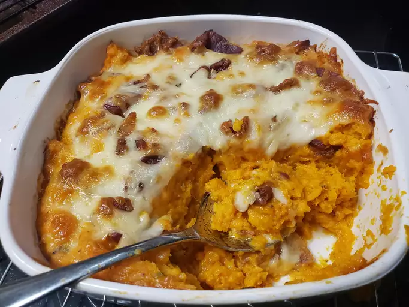

Go Back Home

Description
This loaded sweet potato casserole is not only gorgeous, it has the perfect
texture, and is absolutely the most delicious sweet potato casserole ever. With
bacon, sharp Cheddar cheese, tangy sour cream, and green onions, it has
everything you'd ever load onto a potato, but is made with nutritious, vibrant
orange-fleshed sweet potatoes.
Ingredients
- 4 large orange-fleshed sweet potatoes (3 1/2 to 4 pounds)
- 1 pound thick-cut bacon, cut into 1/2-inch pieces
- 2 teaspoons kosher salt
- 1/2 teaspoon freshly ground black pepper
- 1 teaspoon smoked paprika
- 1 large egg, beaten
- 1/2 cup sour cream, plus more for serving
- 3/4 cup green onions, plus more for serving
- 6 ounces sharp Cheddar cheese, shredded
Ingredients
- Preheat the oven to 400 degrees F (200 degrees C). Line a baking sheet with foil.
Place sweet potatoes on the baking sheet and prick all over with a sharp knife.
- Bake in the preheated oven until tender when pierced with a knife, about 1 hour.
Let sit until cool enough to handle. Do not turn off the oven.
- Place bacon in a cold pan over medium-high heat, and cook until fat begins to
render; stir and reduce heat to medium. Continue to cook, stirring occasionally,
until the fat is fully rendered out and bacon is browned and fully cooked. Drain
off bacon fat, and reserve for another use.
- Scoop sweet potatoes into a mixing bowl, discarding the skin. Use a spoon to
break the chunks of sweet potato into smaller, more uniform pieces. The texture
can be as smooth or coarse as you like.
- Add the salt, black pepper, smoked paprika, egg, sour cream, green onions, half
of reserved bacon, and two-thirds of cheese. Stir together until everything is
evenly mixed.
- Distribute mixture evenly into a shallow 2-quart baking dish, but leave the
surface roughly textured. Scatter on the remaining bacon, followed by
remaining cheese.
- Bake casserole in the preheated oven until the top is browned, and the
casserole is heated through and bubbling around the edges, 30 to 35 minutes.
- Serve with more sliced green onions and sour cream if desired.
:max_bytes(150000):strip_icc():format(webp)/8385055_Loaded-Sweet-Potato-Casserole_Chef-John_4x3-f3516d4313664ebf9dab51987bd47bd1.jpg)